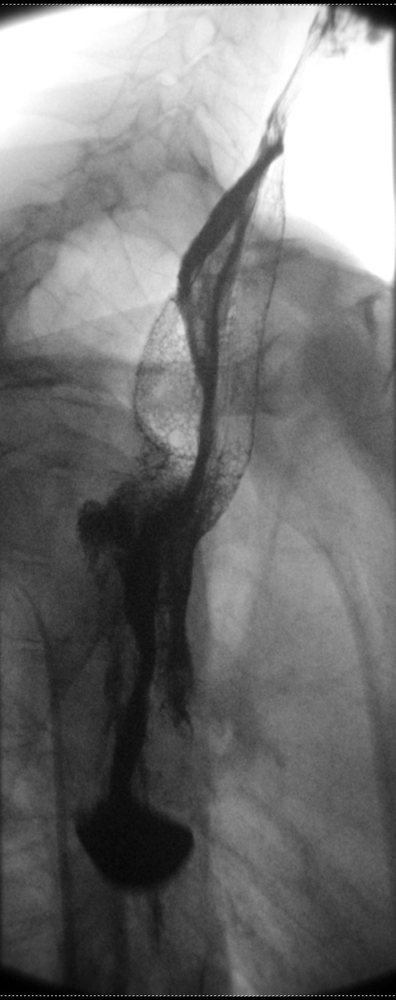

Ficha del catálogo
Acalasia
- Sistema
- Digestivo
- Modalidad
- RX
- Región
- Esófago y unión esofagogástrica
- Dificultad
- Intermedio
Es un trastorno motor primario del esófago caracterizado por la ausencia de peristalsis y la relajación incompleta del esfínter esofágico inferior. Se debe a la pérdida de neuronas inhibitorias del plexo mientérico y se manifiesta con disfagia progresiva a sólidos y líquidos, regurgitación y pérdida de peso. El diagnóstico se confirma con manometría de alta resolución, y la imagen orienta y descarta causas secundarias.
Técnica
El esofagograma con bario es el estudio de imagen inicial. Se realiza en bipedestación con tragos de bario y evaluación fluoroscópica del vaciamiento, complementado con proyecciones oblicuas. El esofagograma cronometrado, en el que se mide la altura de la columna de bario al minuto, a los dos y a los cinco minutos tras la ingesta de un volumen fijo, permite cuantificar el vaciamiento y es muy útil para valorar la respuesta al tratamiento.
Qué observar
- Afilamiento liso y simétrico del esófago distal en pico de pájaro
- Dilatación del cuerpo esofágico proximal al estrechamiento
- Ausencia de peristalsis primaria efectiva con contracciones terciarias no propulsivas
- Retención de alimento y de líquido, con nivel hidroaéreo en el esófago
- Retraso del vaciamiento esofágico medido en el estudio cronometrado
- Ausencia de burbuja gástrica en la radiografía simple de tórax
Hallazgos
El esófago aparece dilatado, con retención de contenido y un estrechamiento distal corto, simétrico y de contornos lisos que produce el clásico aspecto en pico de pájaro. La radiografía de tórax puede mostrar ensanchamiento mediastínico con una línea paraesofágica desplazada, nivel hidroaéreo en el mediastino y ausencia de la cámara gástrica. En los casos evolucionados el esófago se alarga y se torna tortuoso, adoptando morfología sigmoidea. La tomografía muestra dilatación con pared esofágica fina y no debe evidenciar masa ni engrosamiento asimétrico.
Perlas
El hallazgo que obliga a descartar pseudoacalasia es un estrechamiento distal asimétrico, irregular o de más de 3.5 cm de longitud, sobre todo en pacientes mayores de 60 años, con síntomas de corta evolución y pérdida de peso importante. En ese escenario la endoscopia con biopsias y la tomografía son imprescindibles, ya que un adenocarcinoma del cardias puede imitar por completo el patrón de acalasia.
Diagnóstico diferencial
- Pseudoacalasia tumoral
- Estrechamiento largo e irregular con masa o engrosamiento parietal, en paciente mayor con evolución rápida.
- Estenosis péptica
- Estrechamiento distal con antecedente de reflujo, esófago menos dilatado y peristalsis parcialmente conservada.
- Espasmo esofágico distal
- Contracciones terciarias intensas en sacacorchos con relajación del esfínter conservada.
- Esclerodermia esofágica
- Aperistalsis con esfínter inferior incompetente, reflujo libre y esófago dilatado pero sin obstrucción distal.
- Enfermedad de Chagas
- Cuadro indistinguible por imagen, con antecedente epidemiológico y afectación de otros órganos huecos.
Simuladores
- Compresión extrínseca por masa mediastínica o vascular
- Estenosis posquirúrgica tras funduplicatura demasiado ajustada
- Esófago dilatado por obstrucción distal de otra causa, como anillo o membrana
Por modalidad
- RX
- El esofagograma, en especial el cronometrado, muestra la morfología, la aperistalsis y cuantifica el vaciamiento antes y después del tratamiento
- TC
- Descarta masa en la unión esofagogástrica y valora el mediastino cuando se sospecha pseudoacalasia
- US
- Papel muy limitado (el ultrasonido endoscópico puede evaluar el engrosamiento de la pared en casos seleccionados)
Protocolo
Esofagograma con bario en bipedestación, con evaluación fluoroscópica de al menos cinco degluciones separadas y proyecciones frontal y oblicua. El esofagograma cronometrado utiliza un volumen estandarizado de bario diluido con mediciones de la altura y el ancho de la columna al minuto, a los dos y a los cinco minutos. En tomografía se usa contraste intravenoso con cortes finos centrados en la unión esofagogástrica y reconstrucciones multiplanares.
Clasificación
La clasificación de Chicago, basada en manometría de alta resolución, define tres tipos. El tipo I o clásico presenta aperistalsis sin presurización esofágica apreciable. El tipo II muestra presurización panesofágica en al menos el veinte por ciento de las degluciones y es el de mejor respuesta al tratamiento. El tipo III o espástico se caracteriza por contracciones prematuras espásticas y tiene peor pronóstico. Por imagen, el grado de dilatación esofágica y la presencia de morfología sigmoidea también orientan la elección terapéutica.
Errores frecuentes
- Asumir acalasia primaria en un paciente mayor con evolución corta, sin descartar tumor del cardias
- Confundir el estrechamiento liso de la acalasia con una estenosis péptica en un estudio poco distendido
- No valorar la peristalsis en fluoroscopia y quedarse solo con imágenes estáticas del esófago

acalasia pico de pajaro esofagograma aperistalsis pseudoacalasia Chicago disfagia